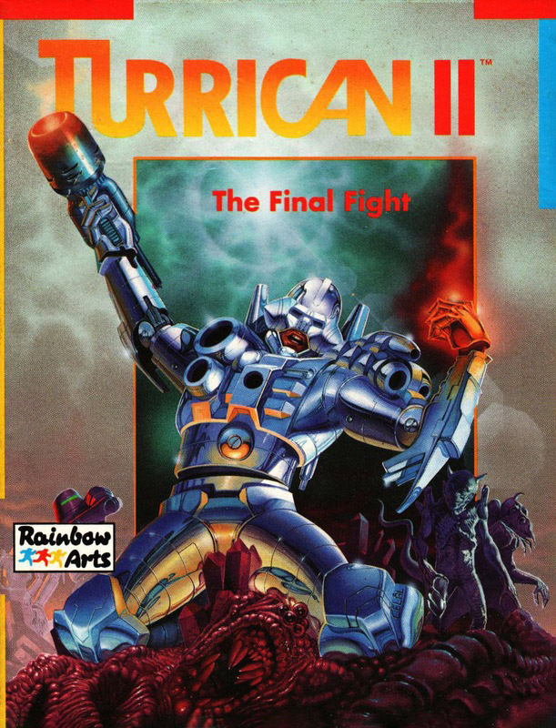
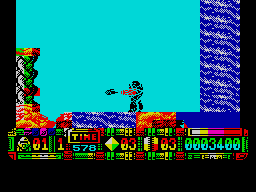

Turrican II


{kind=link}

| Publisher: | Rainbow Arts |
| Price: | £9.99 / £14.99 |
| Year: | 1991 |
| Source: | CRASH, Issue 90 |

After defeating hordes of alien scum in his first conflict, Turrican settled down for a well-earned holiday. Sipping pina coladas on some Mediterranean beach soon become boring for our hero (well it would, wouldn’t it?) and he longed to be blasting again.
Just then, the broadcast of Greek folk music he was listening to was interrupted for a special report. The planet of Landorin was under threat again, from another evil being. Named The Machine, it was stronger and more cunning than anything Turrican had come across before.

Not being one to walk away from a challenge, Turrican set off to Landorin armed with an all-new powersuit. This time his suit has been given a mega 360° laser, useful for wiping out everything in sight. Smart bombs are used instead of grenades and a variety of other weapons can be collected by shooting special aliens and rocks. To help Turrican out of small gaps he can transform into a small gyroscope wheel, which can place mines on the ground.
There are five worlds of arcade action in Turrican II. Four have two levels and the other has three, to make a total of 11 levels to play. Each new world is as addictive and colourful as the last, graphics and game style changing all the time.
You start off on the planet’s surface, where the landscape scrolls in all eight directions. Backgrounds and sprites are jam-packed with colour, so much you’ll begin to wonder whether you’re playing the Spectrum version of the game!
Aliens come in all shapes and sizes, some walking, some shooting and some flying in an attempt to stop you in your tracks. There’s plenty to collect, from weapon add-ons to extra lives and diamonds. Collecting a hundred diamonds will give you a continue play if you die before the end of the level.
You’ll never be able to complain about the lack of variety in Turrican II. Each level has new monsters and many have two end-of-level baddies to be dealt with. Reaching world three takes you into a totally different game. The three levels that make up the world are horizontally-scrolling shoot-’em-ups. You control a ship (Turrican’s inside it) and have endless aliens to kill plus the rugged landscape to cope with. The last of the levels has a scroll that gets faster and faster while you attempt to guide the ship through small gaps in the scenery!
Turrican II is one of the best games I’ve played on the Spectrum. The excellently drawn and coloured graphics are a real treat and the vastness of the game will keep you busy for ages. If you enjoyed the first Turrican you’ll be blown away by this one. Brilliant!
NICK — 95%
RATING
Possibly one of the best Spectrum games ever.
| Presentation: | 92% |
| Graphics: | 95% |
| Sound: | 92% |
| Playability: | 92% |
| Addictivity: | 92% |
| Overall: | 95% |